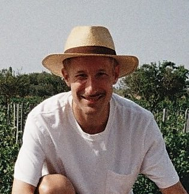

Welcome to my site!
I’m a postdoctoral fellow in the Feiner-Uller Group at the Department of Biology, Lund University, where I conduct research in the history and philosophy of evolutionary biology under the supervision of Tobias Uller.
I earned my PhD in evolutionary biology at the University of Vigo, where I studied the evolutionary ecology of Littorina saxatilis color morphs. Before that, I completed a Master’s degree in logic, history, and philosophy of science at UNED, focusing on theory change in evolutionary biology. Outside work, I enjoy skateboarding, reading, cinema, music, and exploring the history of philosophy and the social sciences.
